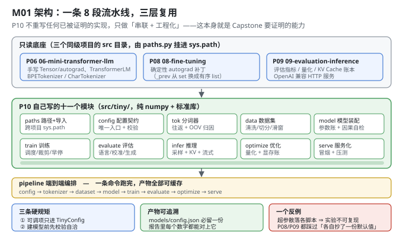
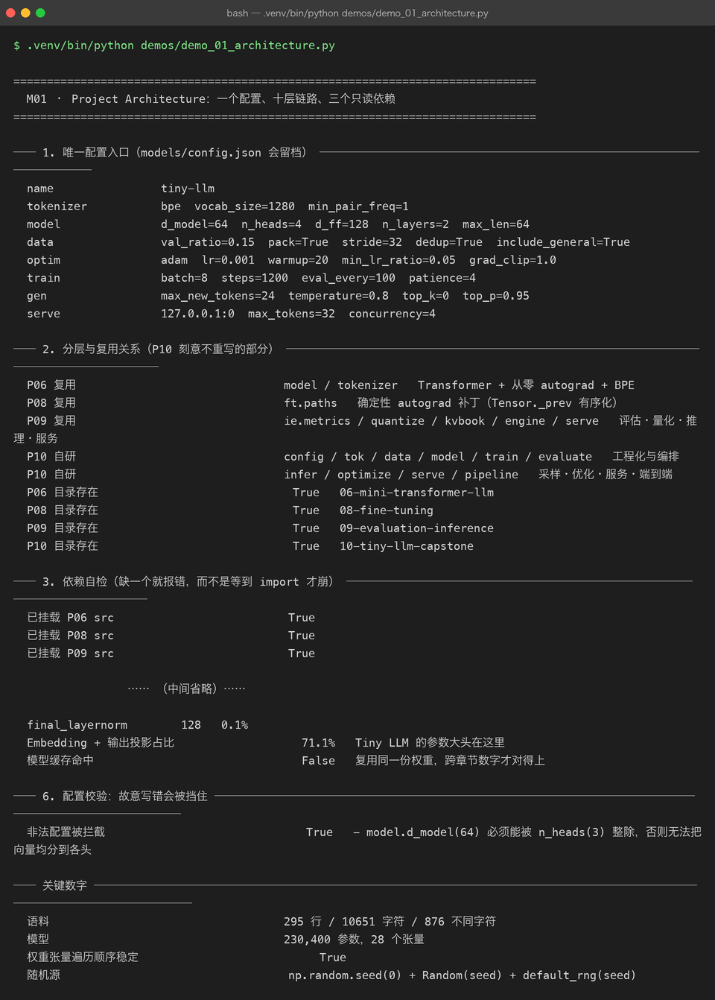

Milestone 01 — Project Architecture：一个配置、八段链路、三层复用
Capstone 的第一件事不是写模型，而是定边界。前面 9 个项目各交付一块能力，但如果把它们堆在一起就开写，最后一定得到一堆"能跑但不可复现"的脚本 —— P08 的 hparams 扫描和 P09 的模型对比都吃过这个亏：两份代码各自抄了一份默认值，跑出来的数字互相矛盾。
所以 M01 只做三件事：定唯一配置入口、画清复用边界、把依赖缺失变成一句能看懂的报错。
1. Why：为什么 Capstone 的第一章是「架构」而不是「模型」
三个必须回答的问题：
- 哪些是要自己写的？ —— 如果连 Transformer 都重写，那这 10 个项目的关系就断了；如果全部照抄，那 Capstone 就没有独立价值。答案在依赖边界上。
- 配置从哪来？ —— 超参数散落在各个脚本里，实验就不可复现。这个坑 P08/P09 都踩过。
- 依赖缺了会怎样？ —— 一份 clone 下来的仓库少了同级项目，是应该在
paths.py给出"缺哪个目录"，还是让某一行from model import ...抛一个不知所以然的ModuleNotFoundError？
2. Design：三条硬规矩 + 三层复用
复用边界（src/tiny/paths.py 负责挂 sys.path）：
| 来源 | 复用什么 | 为什么不重写 |
|---|---|---|
| P06 | TransformerLM（含从零 autograd）、BPETokenizer / CharTokenizer | 手写 autograd 是本仓库最难也最值钱的一块，重写只会引入新 bug |
| P08 | ft.paths.enable_deterministic_autograd() | Tensor._prev 是 set，迭代顺序依赖对象地址 ⇒ 跨进程不可复现。P10 要拿真实数字下结论，必须就地打补丁 |
| P09 | ie.metrics / quantize / kvbook / engine / serve | 评估指标、量化、KV Cache 账本、OpenAI 兼容服务都已跑通并压测过 |
自研的十一个模块：paths config tok data model train evaluate infer optimize serve pipeline。
三条硬规矩（写在 config.py 的模块说明里）：
- 所有可调项只进
TinyConfig，任何脚本只能从它读； TinyConfig.validate()在建模型之前挡掉不自洽的组合（如d_model % n_heads != 0）；- 配置能存成 JSON、能读回来，训练产物目录里一定留一份
models/config.json。

一个刻意的约定：model.vocab_size = 0 表示"跟着分词器走"。词表大小由分词器决定，而分词器要先看到语料才能训出来 —— 但模型结构配置在写文件时并不知道这个数。所以建模型前统一由 resolve_vocab_size() 填实，避免出现"模型词表 1000、分词器词表 1024"这种能跑但会越界的隐患。
3. Real-run evidence（来自 demos/out/demo_01_architecture_terminal.txt）

3.1 唯一配置入口（8 行就能看完全部超参）
name tiny-llm
tokenizer bpe vocab_size=1280 min_pair_freq=1
model d_model=64 n_heads=4 d_ff=128 n_layers=2 max_len=64
data val_ratio=0.15 pack=True stride=32 dedup=True include_general=True
optim adam lr=0.001 warmup=20 min_lr_ratio=0.05 grad_clip=1.0
train batch=8 steps=1200 eval_every=100 patience=4
gen max_new_tokens=24 temperature=0.8 top_k=0 top_p=0.95
serve 127.0.0.1:0 max_tokens=32 concurrency=43.2 依赖自检：缺目录时报错要能指到根因
P06 目录存在 True 06-mini-transformer-llm
P08 目录存在 True 08-fine-tuning
P09 目录存在 True 09-evaluation-inference
已挂载 P06 src True
已挂载 P08 src True
已挂载 P09 src True3.3 参数账本：第一个能发现配置写错的探针
总参数 230,400
张量数 28
fp64 体积 1.76 MiB
token_embedding 81,920 35.6%
output_projection 81,920 35.6%
transformer_blocks 66,432 28.8%
final_layernorm 128 0.1%这个数字本身就暴露了一件事：词嵌入 + 输出投影占掉 71.1%。在 23 万参数的小模型上，"调 d_model"不如"调词表"来得有效 —— M04 会把这个事实展开。
3.4 规模是怎么定下来的
语料行数（清洗后） 295 丢弃 短行 0 / 重复 0
字符数 / 不同字符 10651 / 876
train / val 行数 251 / 44
词表大小选择依据 4 特殊 token + 876 基础字符 + 合并 → 12803.5 配置校验：故意写错会被挡住
非法配置被拦截 True
- model.d_model(64) 必须能被 n_heads(3) 整除，否则无法把向量均分到各头报错里带上具体数值和原因，不是一句 "invalid config"。这是能省下最多调试时间的一行代码。
4. 踩坑与反直觉发现
Tensor._prev是set，跨进程不可复现。 它的迭代顺序由对象地址决定，于是"同一份配置 + 同 seed"在不同进程里会得到不同梯度。P08 已经诊断出这一点，P10 在paths.py里就地打补丁（必须在任何Tensor被创建之前生效，这也是为什么这件事写在paths.py而不是train.py）。Module.parameters()漏掉了整个词嵌入。TokenEmbedding没继承Module，65,536 个参数不在 P06 的参数表里。P10 改用自己写的walk_parameters()递归遍历，28 个张量一个不漏 —— M06 的检查点"存 28 / 读 28"能对上，靠的就是这个。- "能跑但越界"是最难查的配置错误。 模型词表 1000、分词器词表 1024，绝大多数 token 都正常，只有少数几个 id 会索引越界。所以
resolve_vocab_size()宁可显式抛错也不允许两者不一致。
5. Conclusion
- Capstone 的复用边界是明确的：P06 出模型与分词器、P08 出确定性补丁、P09 出评估/推理/服务组件；P10 自己写的是工程化与编排。
- 一个
TinyConfig管住全部超参，models/config.json每次必留 —— 报告里的每个数字都能追溯。 - 依赖缺失时给出带完整路径的报错，而不是让
import崩在无关的位置。 - 参数账本 230,400 / 28 张量，其中词表相关占 71.1%，这直接决定了后续章节的调参方向。
- 配置校验在建模型之前执行：实测
d_model=64 / n_heads=3会被拦下，报错带上具体数值。
6. Code map
| 文件 | 职责 |
|---|---|
src/tiny/paths.py | 路径推导（不硬编码绝对路径）+ 挂 P06/P08/P09 的 src + 启用确定性 autograd |
src/tiny/config.py | TinyConfig 及六个子配置；validate() / to_json() / from_dict() / summary_lines() |
src/tiny/__init__.py | 分层导出的门面；__version__ = "0.1.0" |
demos/demo_01_architecture.py | 6 节：唯一配置入口 / 分层与复用 / 依赖自检 / 规模推导 / 参数账本 / 配置校验 |
demos/out/demo_01_architecture_terminal.txt | 本章所有数字的来源 |
assets/architecture.svg | 8 段链路 + 三层复用图 |
assets/term-01-architecture.png | 真实运行截图 |
7. Version line
v0.0 → v0.1，Capstone 骨架落地。实测：语料 295 行 / 10,651 字符 / 876 个不同字符；模型 230,400 参数 / 28 个张量 / 1.76 MiB(fp64)；词表相关参数占 71.1%；故意写错的配置被 validate() 拦下并给出一句话原因。配图 1 张手写 SVG + 1 张真实终端截图。